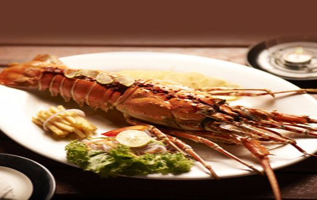

Lobster Peri Peri:
This dish is a ‘Must-Try’ when you holiday in Goa. Portuguese influence is evident in the Goan culture and also in the style of cooking. Lobster Peri Peri is a perfect example of the same. The lobster is covered in hot chilli marinade and cooked to perfection. So, if you love to try out new things, this dish should definitely be on your list.